02 · 能力
口袋里的
工作台。
六件核心能力，全部跑在你的手机上：内核、终端、插件、key 都在本机。向下滚动，逐一看。
01 / 06
流式思考
Anthropic Messages 与 OpenAI 兼容两种协议，回复和思考过程边生成边显示，思考随时折叠。长任务拆成子流程，需要你拿主意时，Agent 会停下来问你。
- 协议
- Anthropic Messages · OpenAI 兼容
- 思考
- 流式输出，可折叠
- 复制
- 消息与代码一键复制
02 / 06
真实终端
源码编译的 proot 撑起完整的 Alpine 3.23 用户空间，Node 24 原样运行。终端是真实 PTY，不是模拟器；配合 Shizuku，还能直接执行 Android 系统命令。
- 系统
- Alpine 3.23 · proot
- 运行时
- Node 24
- 系统命令
- Shizuku，可选，无需 root
03 / 06
一切皆插件
模型、工具、手机能力都以原版 dsh / Cordis 插件接入。Agent 每次要调用工具，先弹出审批卡片：看清它要做什么，再决定允许还是拒绝。
- 内核
- 原版 dsh + Cordis
- 审批
- 工具调用前由你确认
- 工作区
- 文件读写
04 / 06
Skills 与 MCP
技能、MCP、定时任务开箱即用。Agent 会把计划写成待办逐项推进，历史会话支持正文全文搜索，以前的结论随时翻得到。
- 扩展
- Skills · MCP
- 调度
- 定时任务
- 检索
- 历史正文全文搜索
05 / 06
你的 key
自定义 provider、base URL 与模型，key 存在 Android Keystore。没有订阅，没有远程业务后端，用量由原版 token-meter 统计，花多少一目了然。
- 存储
- Android Keystore
- 后端
- 无，自带 API key
- 用量
- token-meter
06 / 06
改自己
声明式 UI 覆盖：说一句话就能调整界面。配置快照回滚：改坏了，一键回到之前的快照。工作区里的改动以 diff 呈现，改了什么一眼看清。
- 界面
- 声明式 UI 覆盖
- 回滚
- 配置快照
- 改动
- 工作区 diff
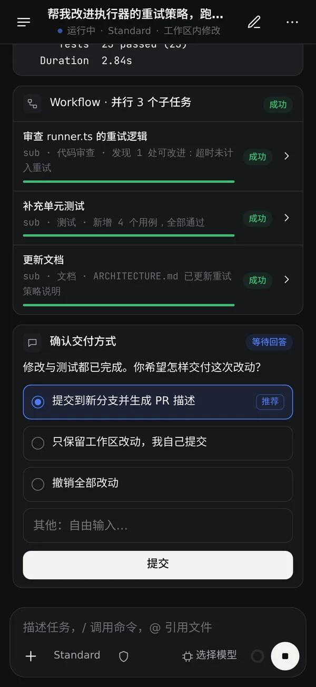
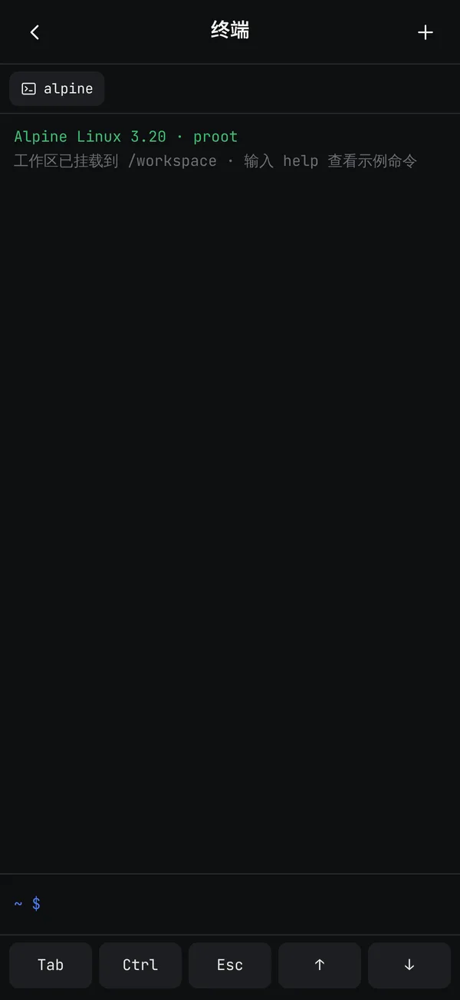
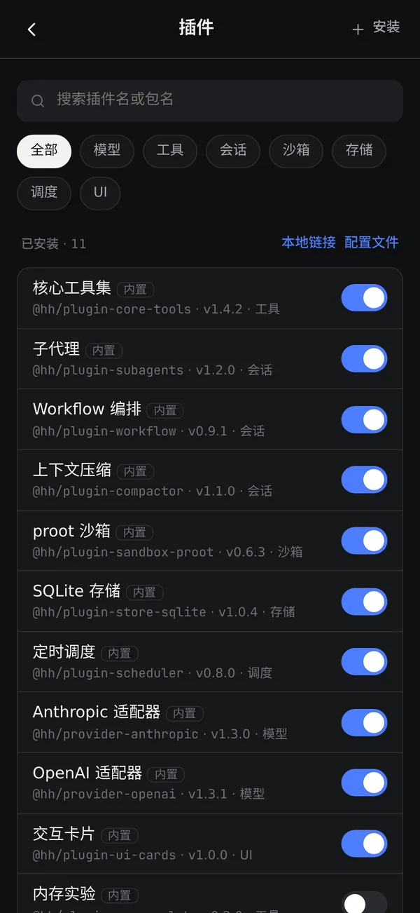
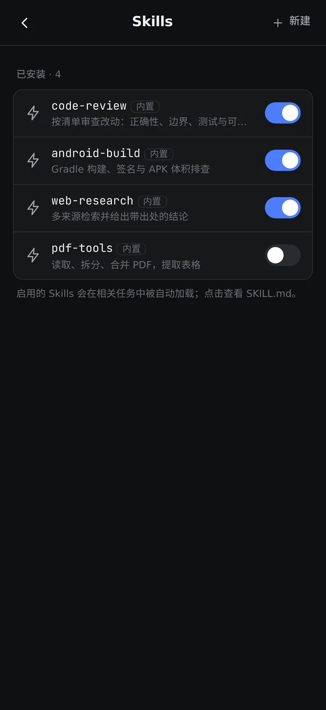
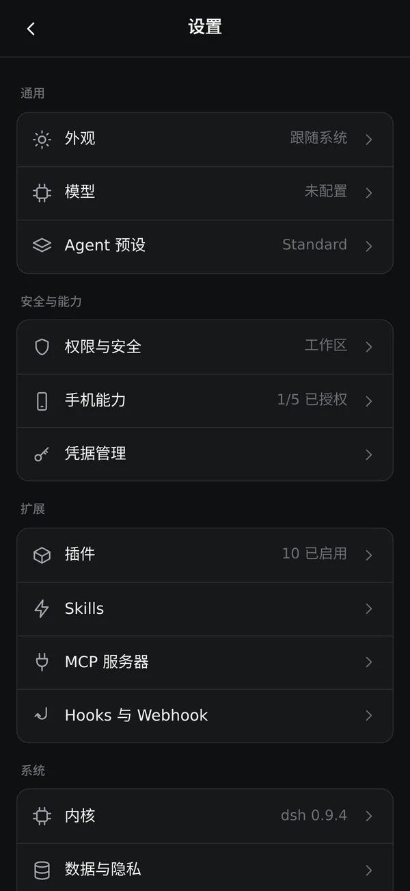
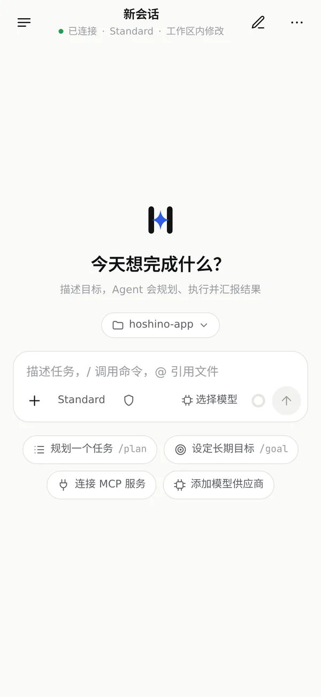
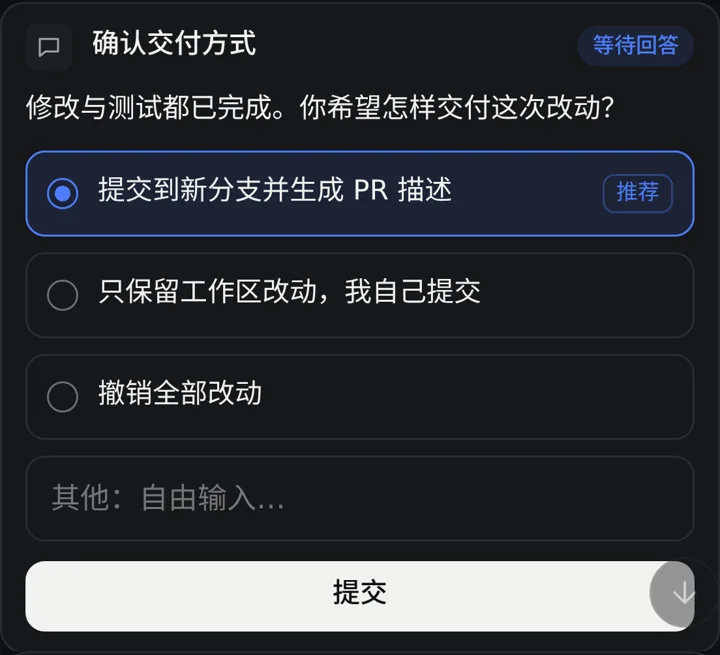
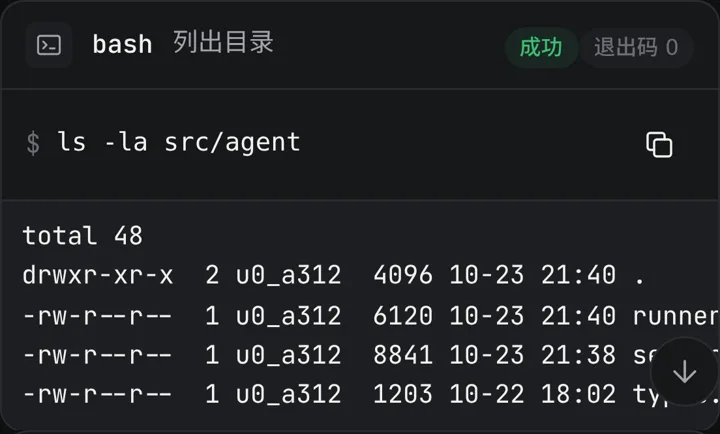
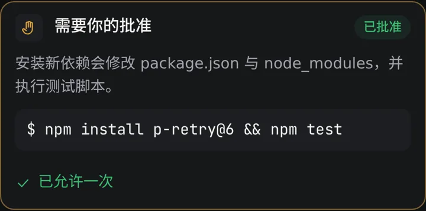
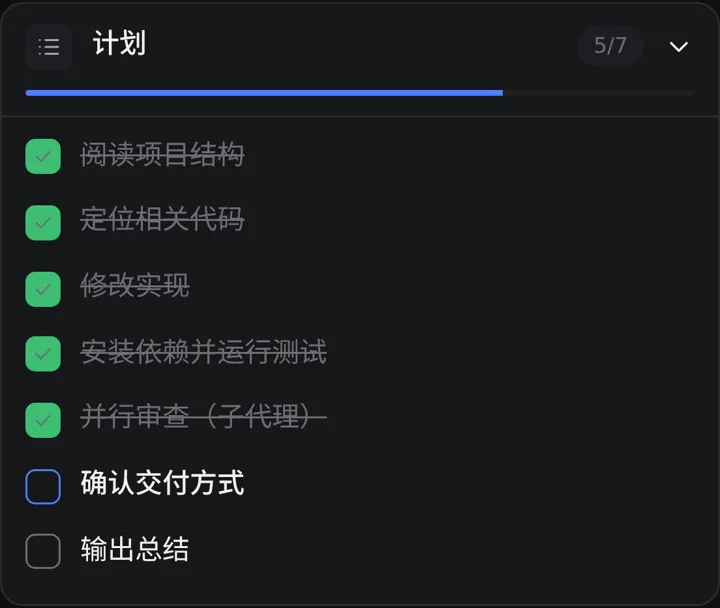
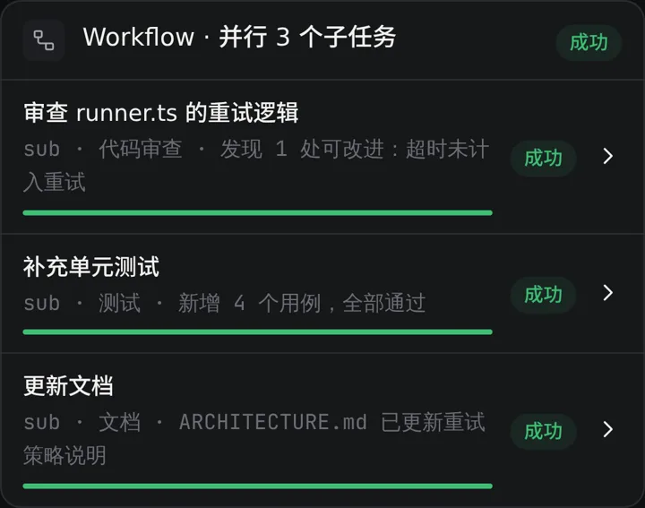
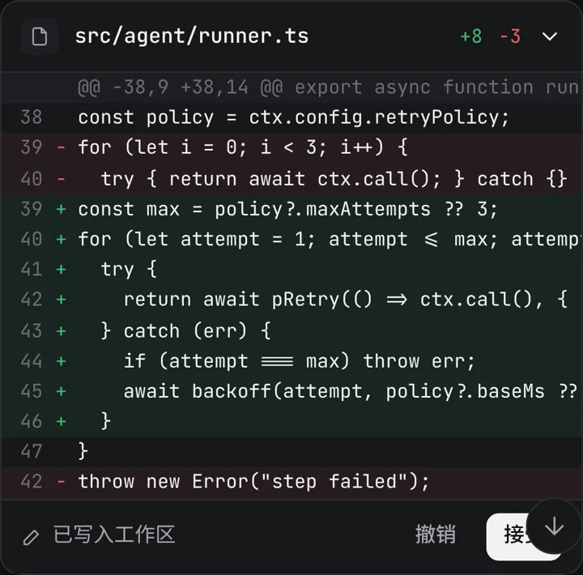
还有这些。
真实界面 · 横向
细节
历史正文搜索
不只搜标题，会话正文全文检索。
截图与长图
软件内直接截图，长对话一张长图带走。
一键复制
消息与代码块一键复制。
token-meter
原版 token 用量统计，每次花费都有数。